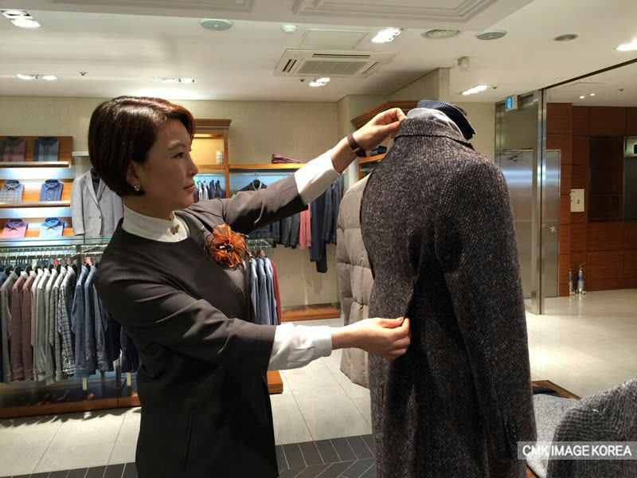

RESEARCH
연구 영역

COLOR
퍼스널 컬러 연구
4계절 16타입, 어울리는 색을 진단합니다.

HAIR
골격과 헤어 연구
얼굴형과 골격에 맞는 헤어를 연출합니다.

STYLE
스타일 연구
바디 타입별 소재·실루엣·패턴을 진단합니다.
CMK 이미지 랩(Image Lab)은 색·형태·질감이 사람과 만나는 방식을 분석해 가장 어울리는 조합을 찾는 CMK Image Korea의 진단·연구 분야입니다.
퍼스널 컬러 진단은 4계절 16타입 체계로 어울리는 색을 찾는 방법이고, 골격 진단은 몸의 골격을 스트레이트·웨이브·내추럴 3타입으로 나눠 어울리는 소재·실루엣·패턴을 고르는 방법입니다.
색채 이론과 체형·골격 분석을 바탕으로 컬러·헤어·스타일을 하나의 조화로운 이미지로 설계하며, 진단 프로그램은 1:1로 진행됩니다.
4계절 16타입, 어울리는 색을 진단합니다.
얼굴형과 골격에 맞는 헤어를 연출합니다.

바디 타입별 소재·실루엣·패턴을 진단합니다.
색채 이론과 체형 골격 분석을 기반으로 개인의 특성을 구조적으로 진단하고, 가장 조화로운 이미지 조합을 설계합니다.
Color · Form · Texture 개인의 특성을 읽고, 조화를 설계합니다.